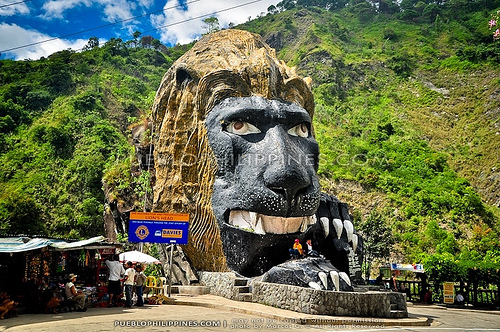

Mt Mayon Bicol
The name originates from the Bicolano word magayon

Bangui Windmills
The Bangui Wind Farm in Ilocos Norte is Southeast Asia's first wind farm and one of the largest in the philippines

Baguio
Baguio, the "Summer Capital of the Philippines" and one of the most famous tourist spot

Pagsanjan Falls Laguna
Is a stunning 91-meter (300 ft) waterfall located in Cavinti, Laguna. A great falls to visit for!

Rizal Park
Rizal Park, also known as Luneta Park, is a massive 58-hectare urban park in Manila, Philippines